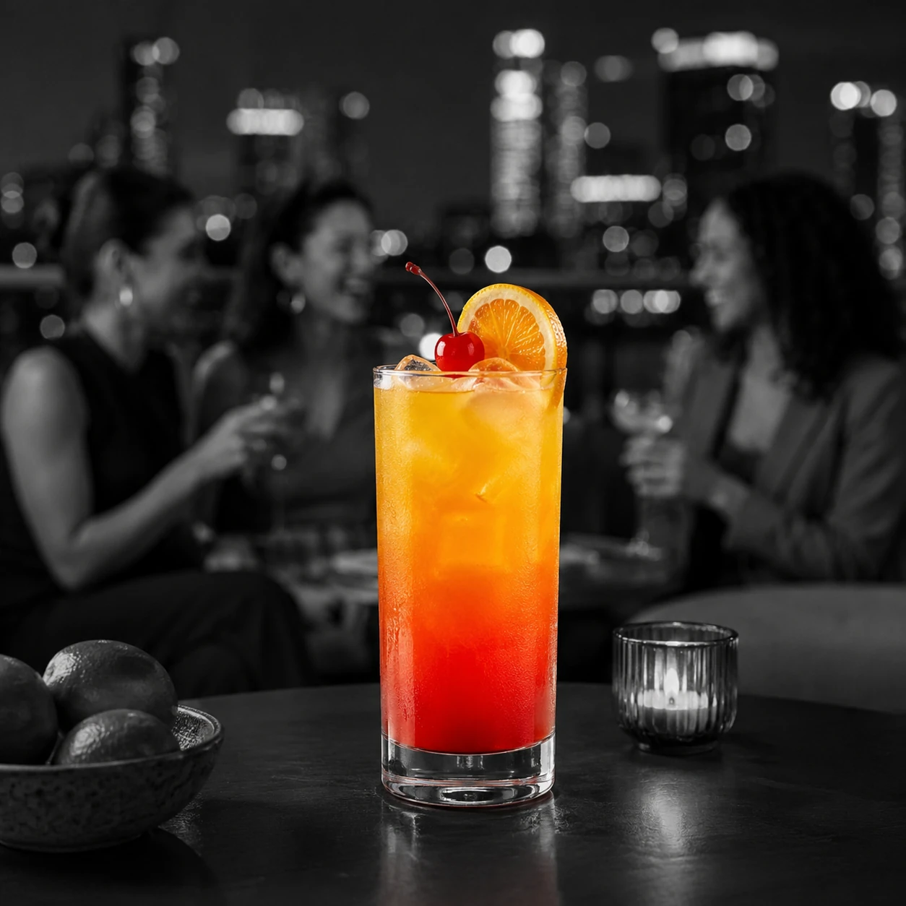
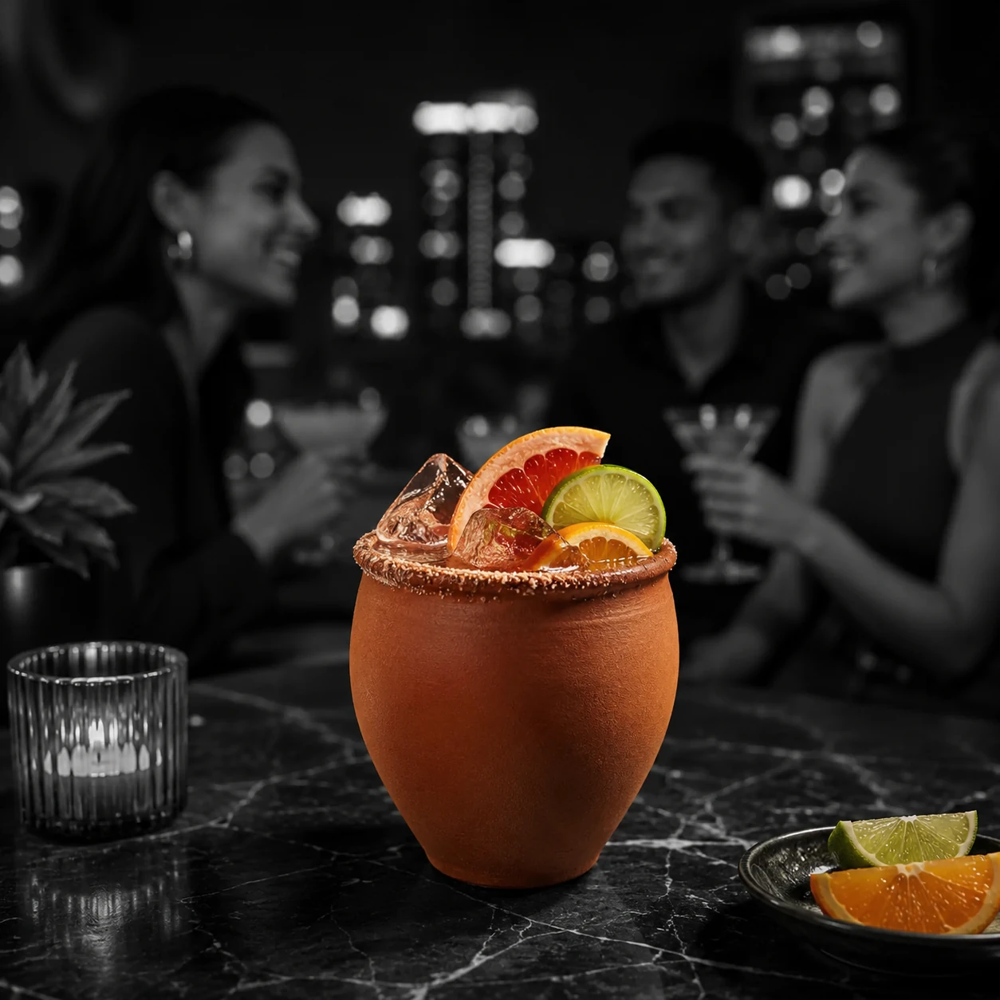
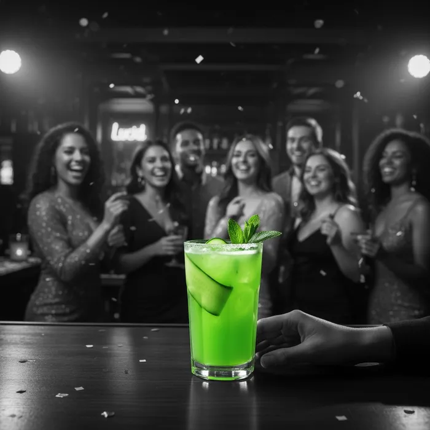

COCKTAILS
Sueños Cocktail Recipes
Simple serves built around Sueños Blanco.
Sueños Margarita
Bright and classic.
View Recipe →Paloma del Sueño
Fresh citrus and bubbles.
View Recipe →Tequila Old Fashioned
Richer and slower.
View Recipe →
Tequila Sunrise
A bright citrus classic with a sunset finish.
View Recipe →Ranch Water
Clean, crisp and made for hot afternoons.
View Recipe →
Mexican Mule
Ginger, lime and a little copper-mug drama.
View Recipe →El Diablo
Dark fruit, ginger snap and a little bite.
View Recipe →
Cantarito
Big citrus energy in a clay cup.
View Recipe →Matador
Pineapple-forward and quietly tropical.
View Recipe →
Cocktail
Jalisco Haze
Cucumber, mint and a crisp tequila highball.
View Recipe →
The Don Terry
Tequila, pineapple and soda.
View Recipe →Hotline →